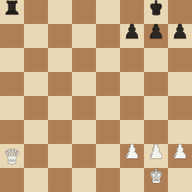
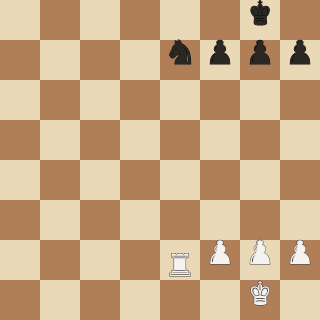

How to install
Three moves, no build step.
-
1.
Install Tampermonkey
Get the Tampermonkey extension for Chrome, Firefox, Edge or Safari.
-
2.
Click Install
The button above opens the script in Tampermonkey — confirm the install. Updates arrive automatically from then on.
-
3.
Open lichess.org
Play, watch TV or solve puzzles. The first capture speaks for itself.
What it does
Signature effects per piece, hints per position.
Kill animations
Each attacking piece has its own effect, and every effect scales with the value of the piece it removes — taking a queen is the crescendo, not just another capture. Optional synth sound and a Vlambeer-style board shake on queen captures.
| ♛ | Queen | nuke |
| ♜ | Rook | smash |
| ♞ | Knight | slash |
| ♝ | Bishop | zap |
| ♟ | Pawn | pixel |
| ♚ | King falls | ascension |
Pattern hints
The position is analysed live with chess.js — no engine — and matching formations light up right on the board, then settle into a faint reminder while they last.
your side opponent
- pin
- skewer
- fork
- battery
- hotspot
- hanging piece
- outpost
- fianchetto
- passed pawn
- open file
- pawn chain
- king fortress
- connected rooks
Pattern hints are a study aid — use them on analysis boards, puzzles and game review, not to gain an edge in rated games.
Demo
See it on a real board.
Recorded straight from the engine — the same renderer that draws on your board. Above in the hero: the full Signature cycle. Two more looks:


works on: live games · analysis board · lichess TV · puzzles